September 2026
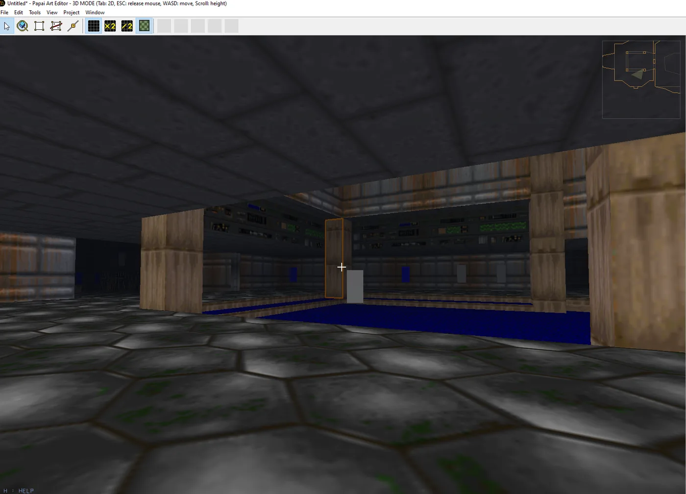
PaTool LevelEditor 2.0.0
This is 2.0, and it is a milestone for the editor. Rooms are no longer uniformly lit boxes: a sector has a brightness and a colour. A wall can show a different texture above and below a doorway. Walls can stand on their…
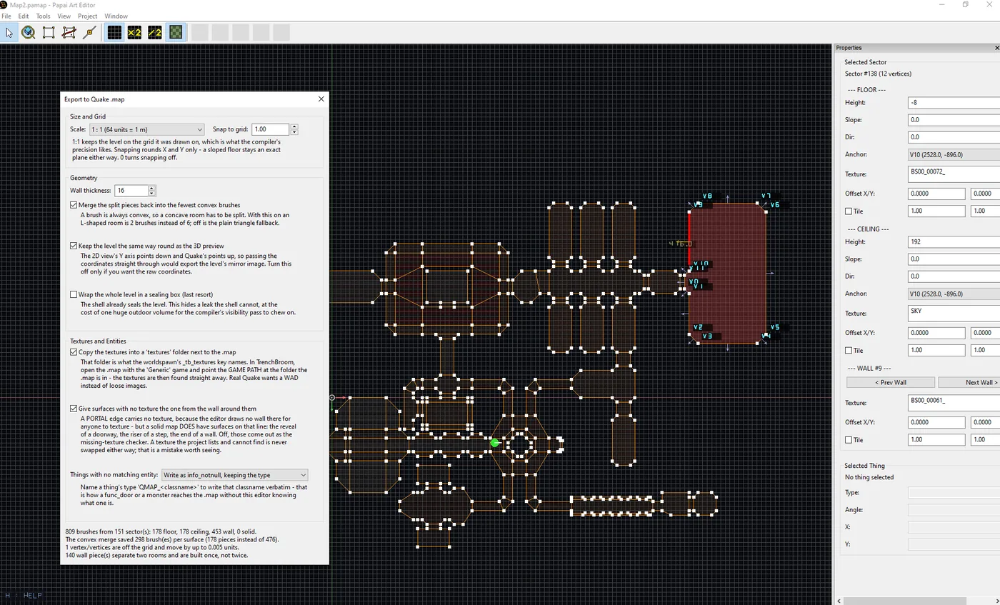
PaTool LevelEditor 1.9.3 - Quake .map export
This build adds one menu item: File > Export to Quake .map. Your map comes out as a level that other tools can open and compile. There is also Tile Mode for floors and ceilings, and a texture bug that had been turning…
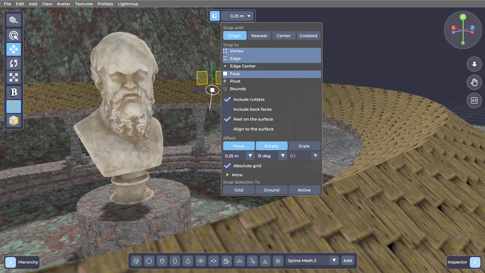
PapaiArt Tools - Level Modeller - 1.7.2 snapping
Up to now, putting a wall next to another wall in PapaiArt Tools – Level Modeller meant eyeballing it, squinting at the seam, and then typing coordinates into the Inspector until the gap went away. Your box landed at x…
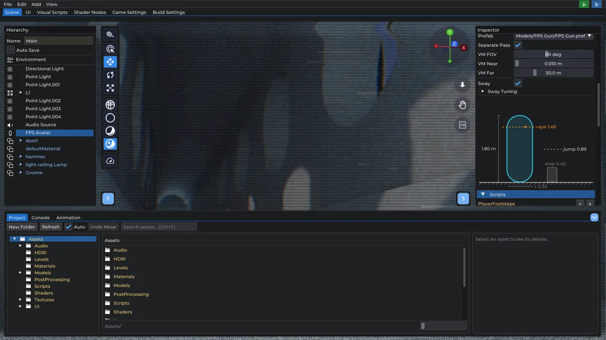
FPS Lab 0.8.8 - New animation features
This update is all about the animation system. Three things, and each one removes a workaround you were probably already writing. The Play Animation node has a new Blend input: how long, in seconds, the object takes to…
August 2026

PapaiArt Tools - Level Modeller - 1.7.0
The Spline Profile editor grew up The newest build is mostly about one thing: the profile editor on Spline Mesh objects was too cramped to actually shape anything in. You can now navigate it, select properly, and…
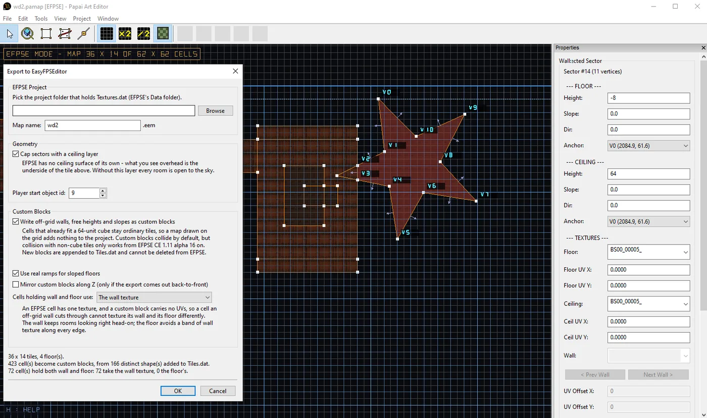
PaTool LevelEditor 1.9 - EFPSE Export 2.0
Until now, exporting to EasyFPSEditor meant surrendering to its 64-unit cube grid: a diagonal wall came out as a staircase, and any floor height that wasn't a whole tile got rounded to one. That's over. Angled walls…
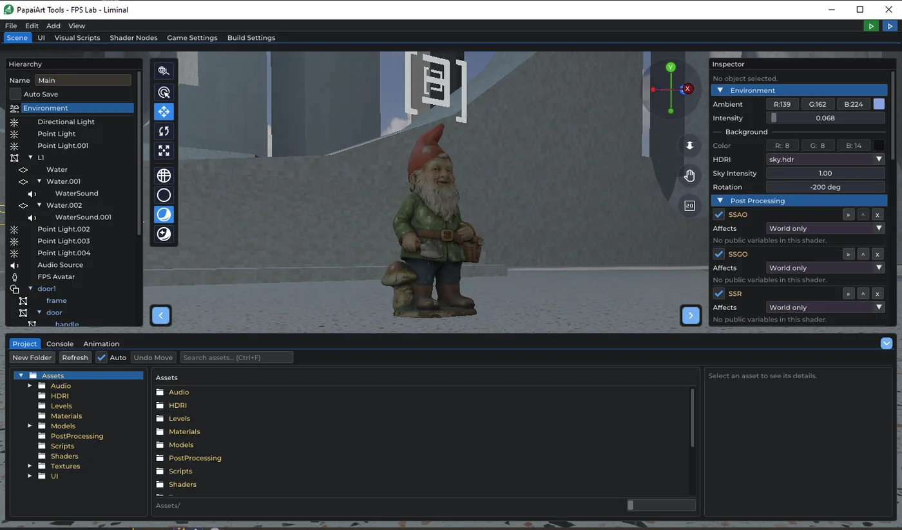
FPS Lab 0.8.1 - LOD - UI - Prformance optimalization
Mesh objects can now carry cheaper stand-in geometry. LOD0 stays SceneObject::mesh ; the extra levels live in a new lods list, each with the relative screen height below which it takes over. Screen height rather than…

Exporting to EasyFPSEditor
Level Editor draws maps the way a portal engine wants them: sectors with arbitrary polygonal outlines, per-wall textures, sloped floors, heights anywhere you like. EasyFPSEditor wants something else entirely. An EFPSE…
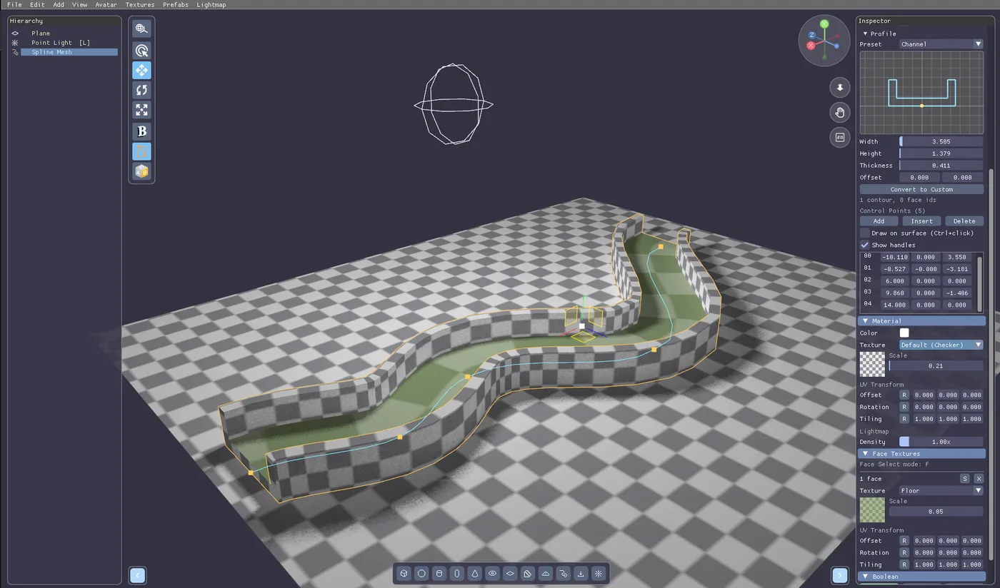
PapaiArt Tools - Level Modeller - 1.6.3
Some shapes are miserable to build out of boxes. A curved tunnel. A road that bends around a hill. A handrail following a staircase. A pipe run along a ceiling. You can do all of it by hand-placing forty rotated…
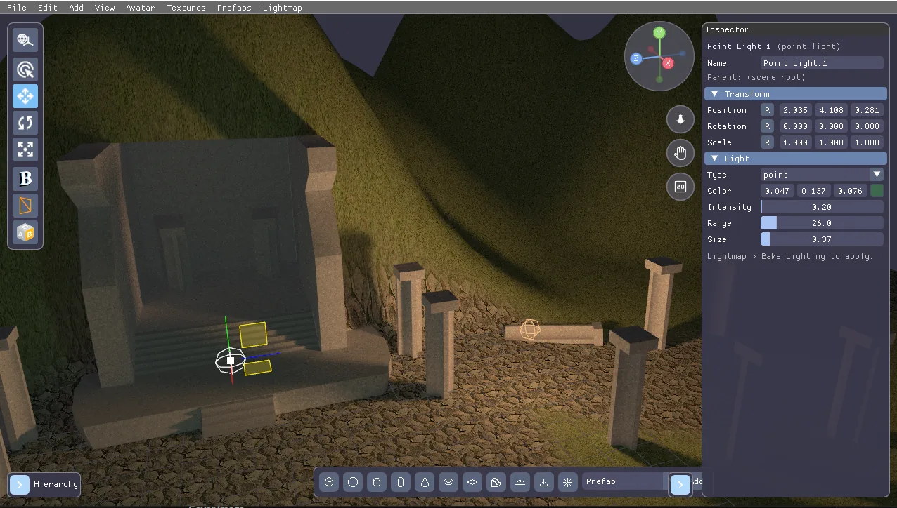
PapaiArt Tools - Level Modeller - 1.5.2
Terrain, and a hard look under the hood The feature the level layout has been missing is here, and alongside it went a lot of work on editor speed and on getting the lighting right. Terrain Terrain is a new object type…
Level Modeller 1.4.2 GPU Lightbake
Until now the lightmap was one texture, and a bigger level simply meant coarser shadows — the same 2048 px stretched over more square meters. That is backwards: texel density is the quality setting , and the atlas…
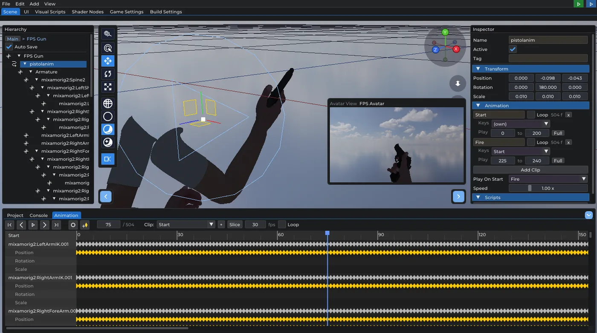
FPS Lab 0.7.7 Updates
Prefab Mode got a new toolbar toggle. With it on, the camera preview no longer shows a selected camera object — it looks through the player's eye : the stage origin is the eye the weapon hangs off, framed with the…
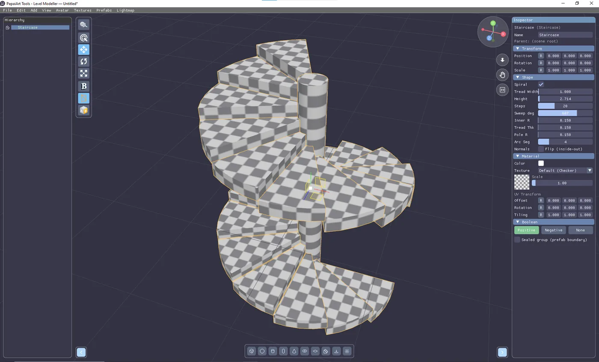
PapaiArt Tools - Level Modeller - 1.3.1
Level Modeller devlog - July 12 to August 8 Four weeks of work on PapaiArt Tools - Level Modeller. Less flash this time, more foundation: the boolean result got noticeably cleaner, saved maps got a lot smaller, and a…
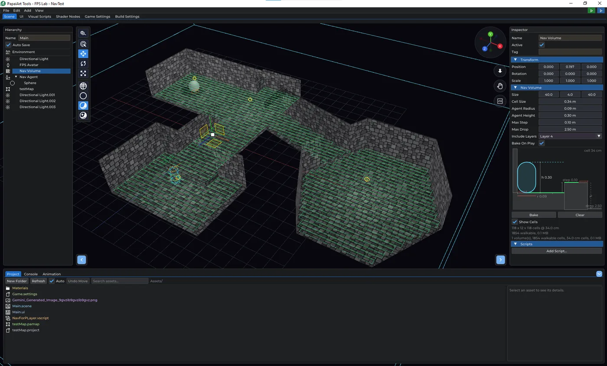
FPS Lab 0.7.3 - Navigation Volume and Agent System
Until this build, an enemy in FPS Lab could only walk the straight line to you. That is what Move Towards does, and it is what the zombie in the handbook's project 4 does — which works beautifully in an open room and…

PaTool LevelEditor 1.8.4
The 2D plan view now paints each sector with its actual floor texture, faintly, underneath the grid. It uses exactly the same UV mapping as the 3D view — world position divided by the tile size, plus the sector's own…
July 2026
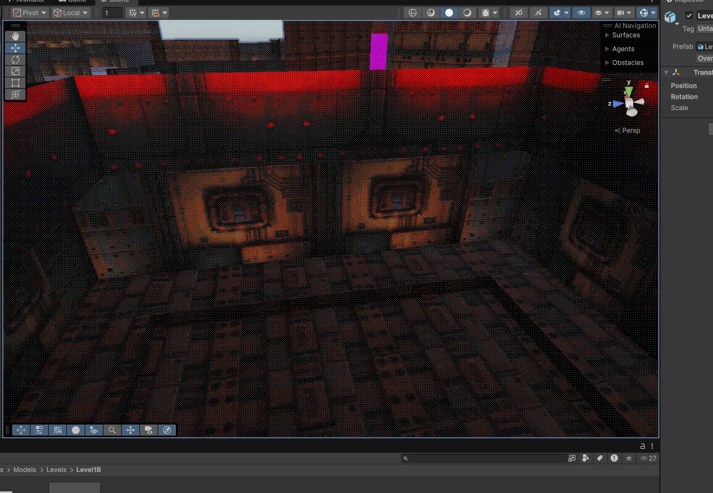
Doom like level editor 1.6.2
Two busy weeks on the 2D editor. Here's everything that landed. You can now drag a rectangle over empty space to select multiple vertices and Things at once. A bounding-box gizmo appears around the selection with: 8…
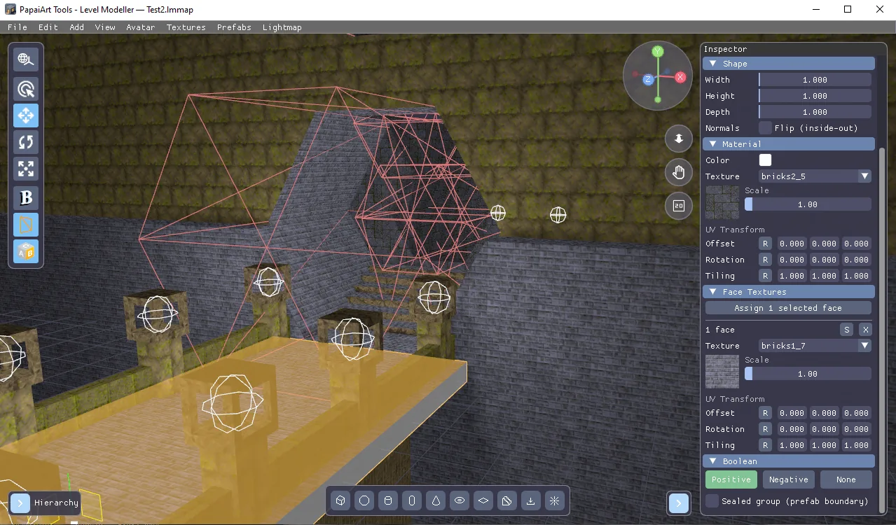
PapaiArt Tools - Level Modeller - 1.2.0
You can now texture individual faces! Until now a texture applied to the whole object — from this update, every wall, floor, tread and cut surface can have its own material. A new tool joined the viewport toolbar (or…

PapaiArt Tools - Level Modeller - 1.1.5
Two big features landed in Level Modeller over the last two days: an inside-out room workflow and a configurable FPS avatar — both carried all the way through to the Unity package. Every object now has a Flip…
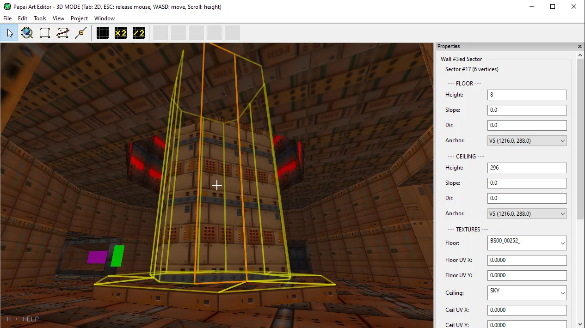
PapaiArt Level Editor 1.4.4 - multi select in 3D view
Texturing just got a lot faster. Until now, applying a texture in the 3D view meant clicking one surface, picking a texture, then hunting down the next surface — one at a time. This update introduces multi-face…
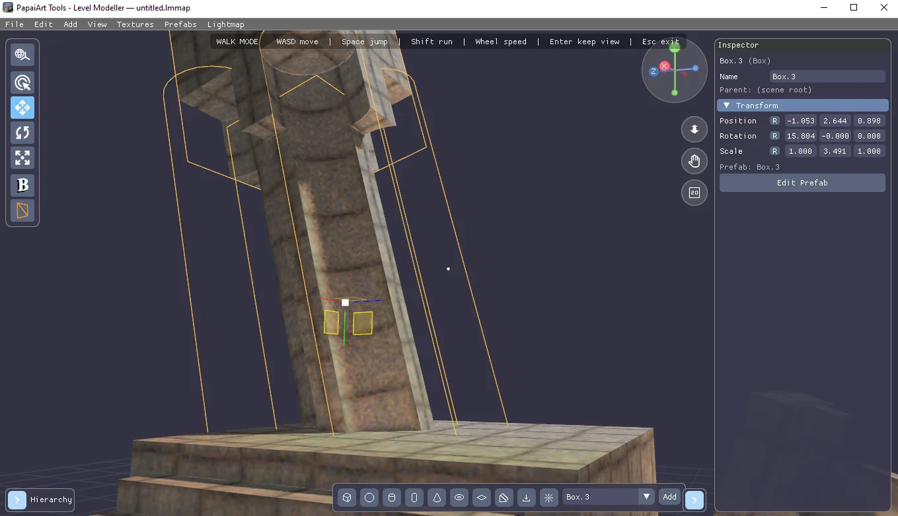
PapaiArt Tools - Level Modeller - 1.0.0
Today is a big day: PapaiArt Tools - Level Modeller has officially left Early Access. This release is version 1.0 — thank you to everyone who tested, reported bugs, and shaped the tool along the way. To celebrate, the…

PapaiArt - Level Editor maps come to Level Modeller
Today's update is a big one: PapaiArt Tools - Level Modeller and Level Editor now properly talk to each other, and the modeller got a round of engine and workflow upgrades. Import your Level Editor maps — as real meshes…

PapaiArt Tools - Level Modeller - 0.9.6 EA
Hey everyone! This update is all about working with more than one thing at a time — plus a long-requested feature: bringing your own meshes into the editor. You can finally select multiple objects at once: Drag on empty…
PapaiArt Tools - LevelEditor 1.4.3
A big drawing-focused update for the Level Editor. Here's everything new. New shape tools A new Shapes strip appears next to the canvas whenever the Sector tool is active. Besides classic point-by-point drawing you now…
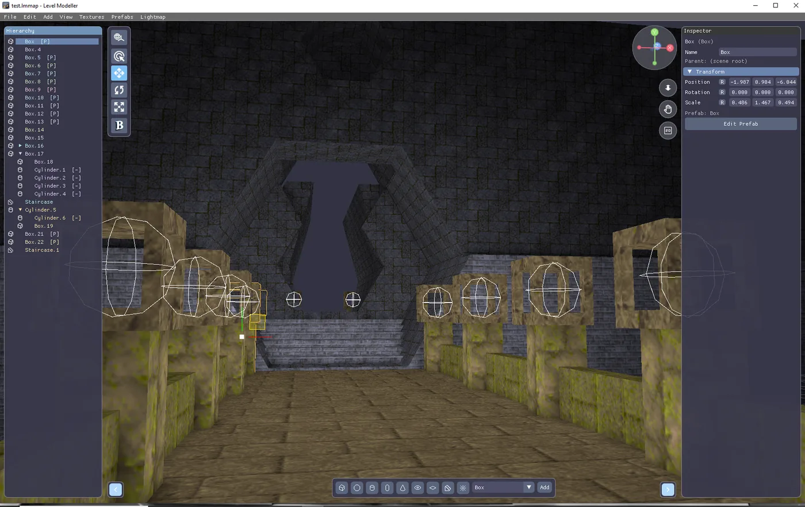
PapaiArt Tools - Level Modeller - 0.9.1 EA
Level Modeller can now export your levels as GLB (glTF 2.0 binary) — alongside the existing OBJ export. This is a big quality-of-life upgrade if you're bringing levels into Unity, Godot, Unreal, Blender, or three.js…
June 2026
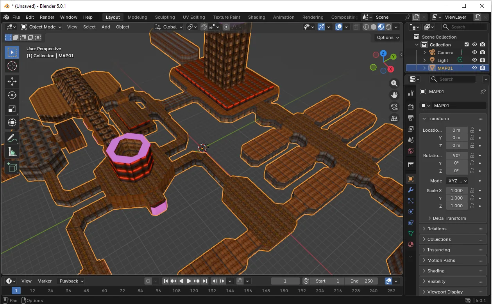
OBJ Export: Material & Texture Fixes
OBJ Export — Three Fixes map_Kd lines in the MTL (user-reported bug) The MTL file only contained newmtl , Kd , Ka , Ks , Ns , d — no map_Kd line, so renderers that rely on it (Raylib, others) showed no texture. Fix…
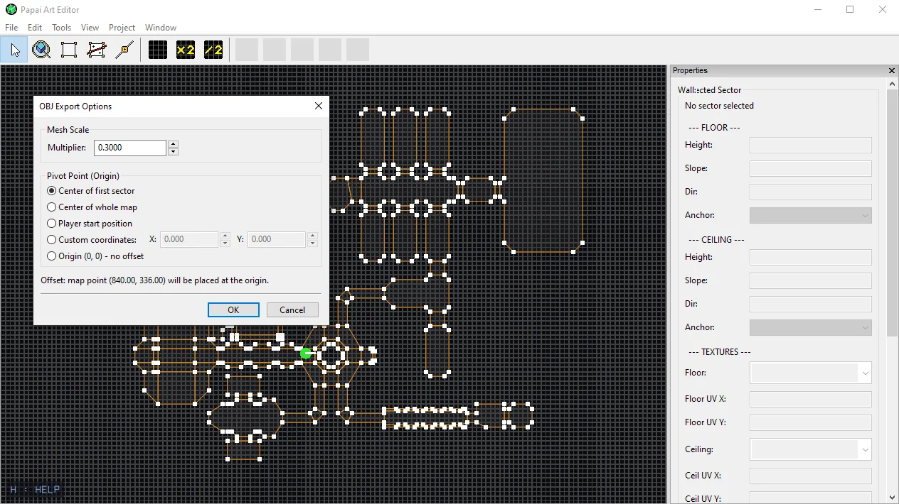
PaTool LevelEditor 1.2.6
New: OBJ Export Options Exporting your level to OBJ just got a lot more flexible. Instead of dumping the mesh at a fixed size and position, File → Export to OBJ… now opens an options dialog first. Mesh Scale A single…
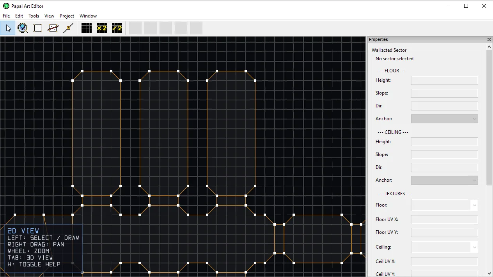
PapaiArt Tools - Level Editor 1.2.5
On-screen controls help Both the 2D and 3D views now have a built-in controls overlay. It's off by default — you'll just see a small H : HELP marker in the bottom-left corner. Press H to pop open the full list of what…
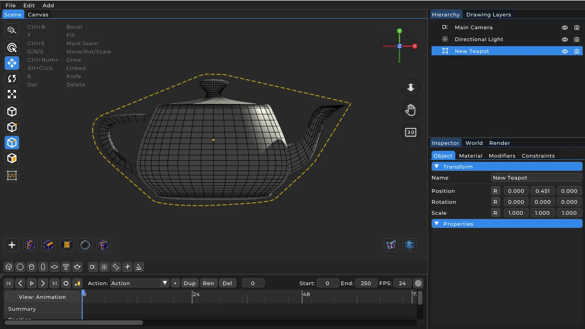
Blender-style transform hotkeys (G / R / S) in v1.0.1
This is the bigger one: we added modal transforms, just like you're used to in Blender. No more dragging gizmo arrows — one key press and a mouse move, and you're transforming instantly. The basics: G – grab (move) R –…
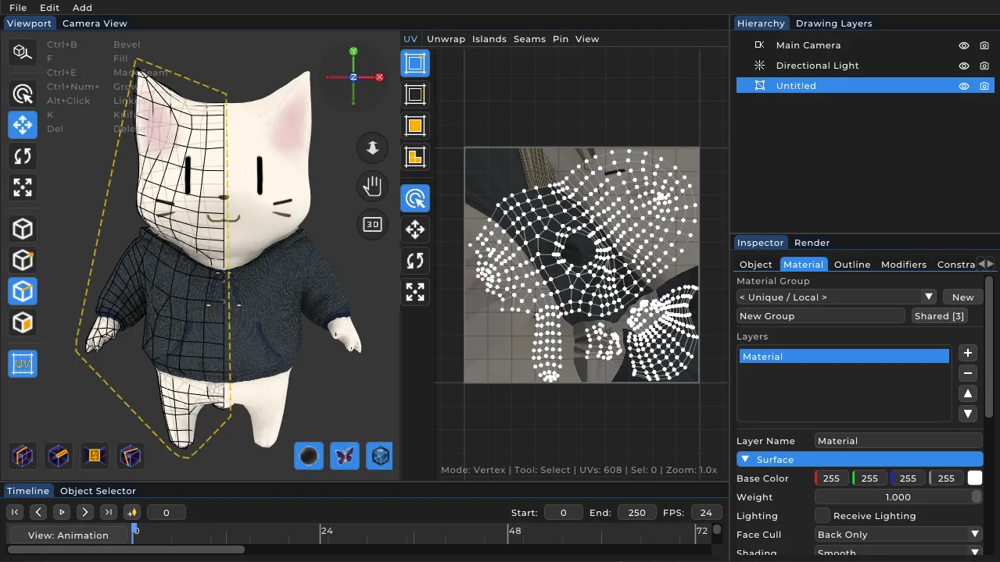
Papaiart Animation Studio 1.0
We have reached the first milestone. Version 1.0 is already a highly useful tool for animators and game developers alike. What is an even bigger step forward: FBX export — brand-new system (the biggest item) New…
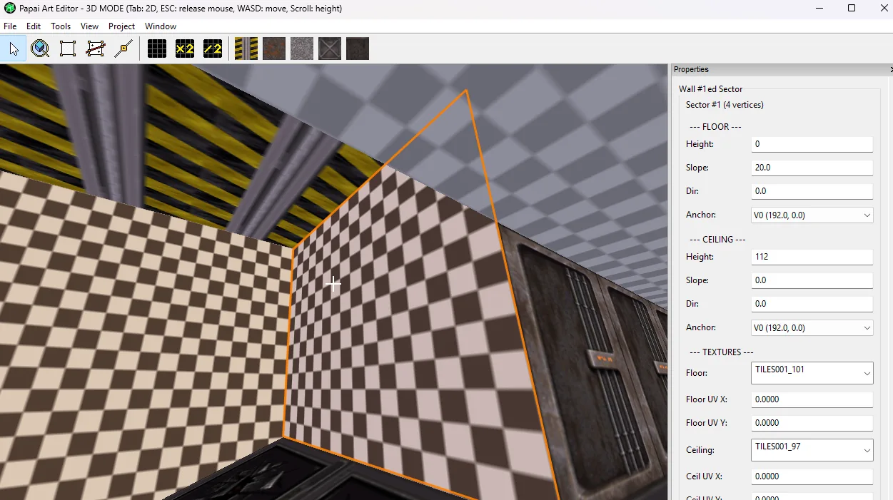
Level Editor 1.2
The 2D editor works in Y-down screen space, which was causing exported levels to come out mirrored along their north-south axis. We fixed the handedness properly for each target: Unity (left-handed) now maps mapY → -Z …